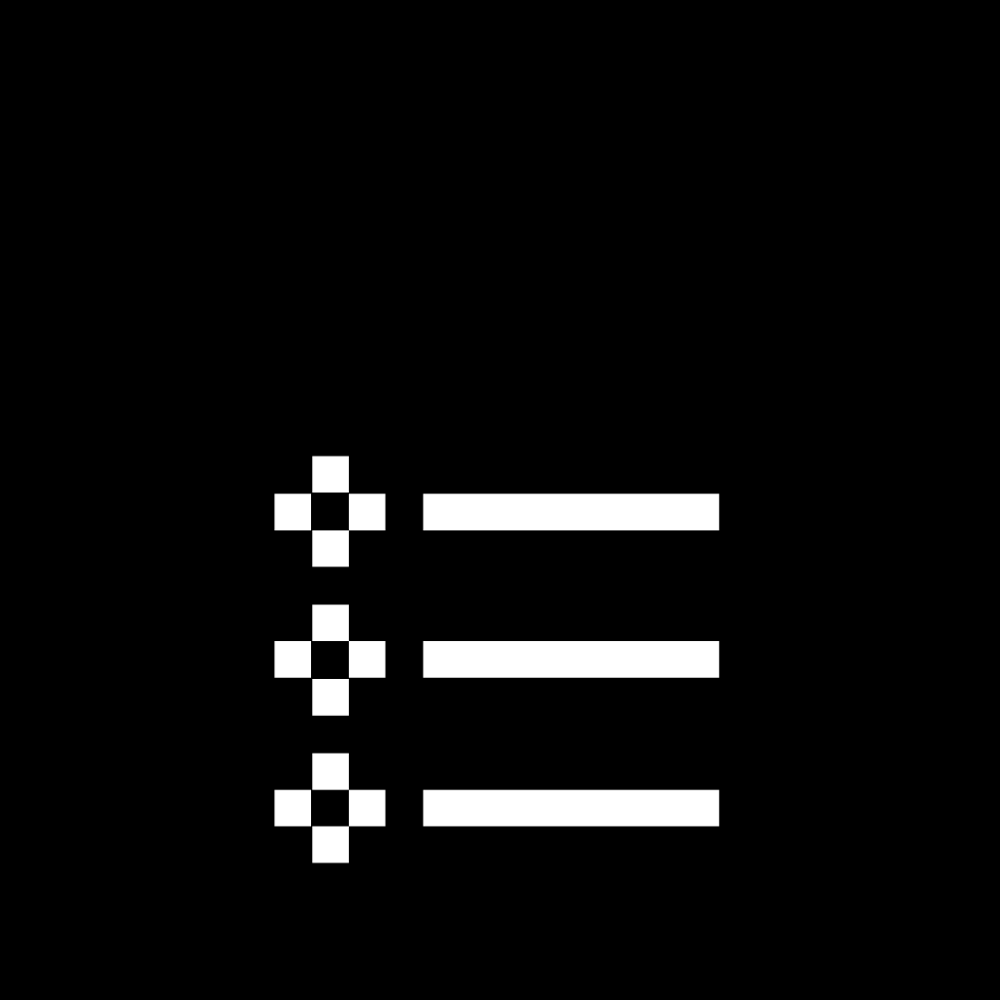

Ementa
Elaboração de páginas web. Linguagens de marcação. Folhas de estilo. Javascript. Uso de linguagens de programação para geração dinâmica de páginas web. Uso de servidores web para armazenamento de sites. Atividades práticas de implementação de sistemas baseados nessas linguagens.
 Objetivos
Objetivos
Colocar em perspectiva a programação para Web. Capacitar o aluno a compreender as principais linguagens de marcação e estilo. Capacitar o aluno a compreender e desenvolver scripts para execução em navegadores. Capacitar o aluno a compreender e desenvolver scripts para execução em servidores web.
Tópicos
Tópicos 0 e 1 - 17/08
Instruções gerais sobre a disciplina. Visão geral sobre o funcionamento da web, com foco nas interações navegador-servidor, e contextualização da Programação para Web.
Tópicos 2 e 3 - 24/08
Hypertext Markup Language (HTML) e estrutura de documentos HTML (tags, declarações DOCTYPE, elementos HTML e atributos de elementos HTML). Exemplos de elementos HTML (parágrafos, títulos, imagens, hyperlinks, tabelas, listas e iFrames).
Tópicos 4 e 5 31/08
O elemento HEAD de HTML. Layouts via HTML.
Tópicos 6 e 7 - 14/09
Cascade Style Sheets (CSS): definições, sintaxe e formas de utilização. Cascade Style Sheets (CSS): propriedades de fundo de tela, de texto e de fonte.
Tópico 8 - 21/09
Cascade Style Sheets (CSS): propriedades abreviadas e o modelo de caixas (box model).
Tópicos 9 e 10 - 28/09
Programação no front-end com JavaScript: definições, sintaxe, instruções e o objeto DOM. Detecção e reação a eventos via JavaScript.
Tópicos 11 e 12 - 05/10
Manipulação de formulários HTML via JavaScript. Orientação a objetos em JavaScript.
Tópicos 13 e 14 - 26/10
Programação no back-end com PHP: infraestrutura necessária e aspectos gerais da linguagem. Aspectos específicos da linguagem PHP: operadores, estruturas de controle e funções.
Tópico 15 - 09/11
PHP e formulários HTML, Server Side Includes
Tópicos 16 e 17 - 23/11
Orientação a objetos em PHP. Acesso a Bancos de Dados em PHP via PHP Data Objects (PDO).
Tópicos 18 e 19 - 30/11
Cookies e sessões em PHP. Comunicação assíncrona de dados entre back-end (aplicações em PHP) e front-end (scripts em JavaScript).
 Critérios de avaliação
Critérios de avaliação
A disciplina contará com um Projeto Final (a ser desenvolvido em grupo), dividido em três entregas parciais ao longo do semestre, e uma série de exercícios práticos de fixação (a serem desenvolvidos individualmente). Tais atividades serão utilizadas para avaliar a aprendizagem do aluno. Particularmente no caso do Projeto Final, as notas individuais de cada aluno serão atribuídas conforme sua contribuição em cada etapa.
 Referências
Referências
Bibliografia Básica
- Schultz, D. & Cook, C. “Beginning HTML with CSS and XHTML – Modern Guide and Reference”. Apress, 2007. DOI: http://dx.doi.org/10.1007/978-1-4302-0350-6 (acesso via VPN/Unicamp)
- McPeak, J. & Wilton, P. “Beginning JavaScript®”. 5th. Ed., John Wiley & Son, 2015. Disponível em: http://onlinelibrary.wiley.com/book/10.1002/9781119209423 (acesso via VPN/Unicamp).
- Saraiva, M. O. “Desenvolvimento de sistemas com PHP”. SAGAH, 2018. Disponível em: https://integrada.minhabiblioteca.com.br/books/9788595023222 (é necessário cadastro via Unicamp).
Bibliografia Complementar
- W3Schools Online Web Tutorials: https://www.w3schools.com/
- Mozilla Developer Network: http://developer.mozilla.org/
- Silva, M. S. “Construindo sites com CSS e (X)HTML Sites controlados por folhas de estilo em cascata”. Novatec, 2008.
- Silva, M. S. “JavaScript: Guia do Programador”. Novatec, 2010.
- Niederauer, J. “Desenvolvendo Websites com PHP”, 2ª ed. Novatec, 2011.
- Dall’oglio, P. “PHP: Programando com Orientação a Objetos”, 2a ed. Novatec, 2009.